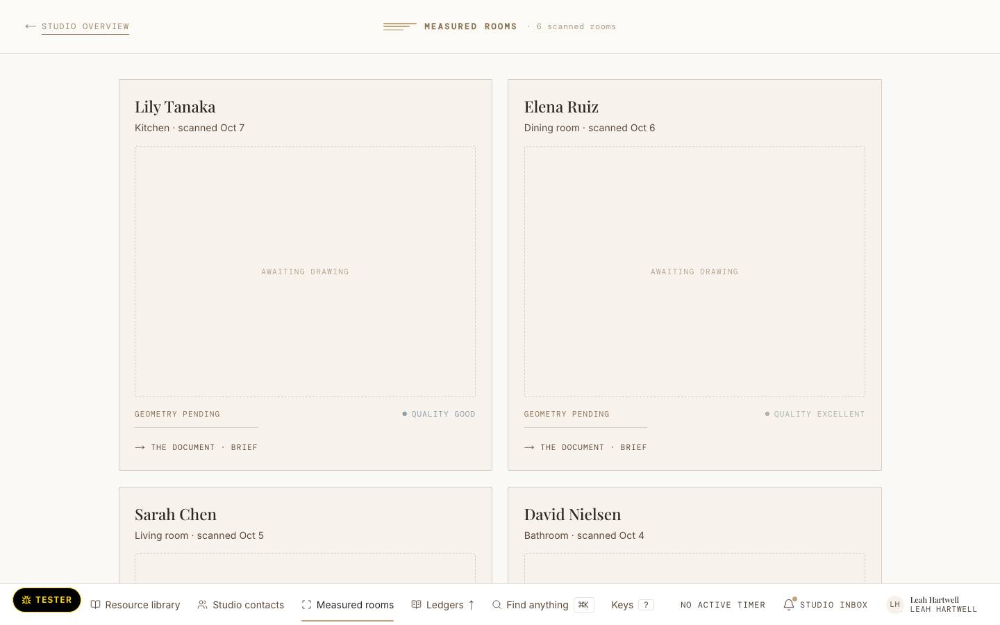
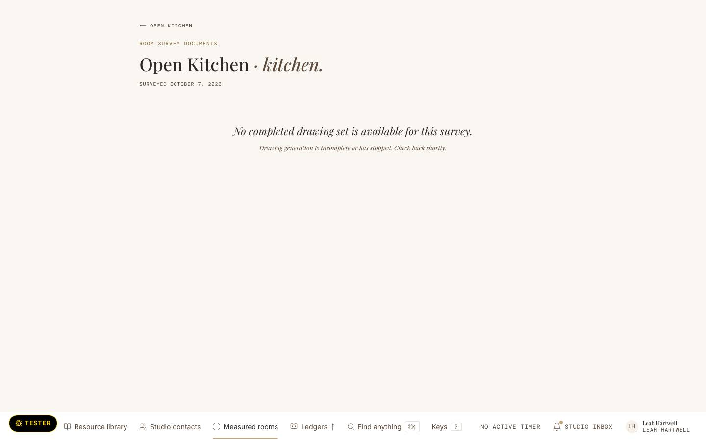

Room · scanned Tuesday 29 September
Dining room
- Size
- 12′ 10″ × 15′ 1″
- Scan
- Quality good
frame-rooms-t1 · today, 1440 · Measured rooms as walked: every room a boxed card nesting a dashed AWAITING DRAWING plate, scan quality graded by a coloured dot.

Walk screenshot of the local seed (SQ-800); its names are walk data. The proposed frames use the fixture. Illustrative fixture · Hartwell Studio is invented
frame-rooms-p1 · proposed, 1440 · Leah, Monday 12 October · Rooms by job: “is this room measured and drawn yet?” Sections by job with the client and the job’s 2 px tick in the eyebrow; at most three room Cards each, a plate slot holding the plan or the A10 silhouette with the ink word AWAITING DRAWING; quality as an ink word. No filled act. Depends on U-Q1 (card edge), U-Q13 (state in ink), U-Q20 (the card test).
Rosalind FairweatherProject
Room · scanned Tuesday 29 September
Room · scanned Tuesday 29 September
Nora and Sam HollowayProject
Room · scanned Thursday 24 September
Owen and Cait BranniganProjectJordan’s
Tom and Ellery VanceProposal
Room · scanned Monday 14 September
Marks at rest: today 26 · 7 · 10 · 35 · proposed measured at render
--rule-mid. (uplift (c) area 3; D2 area 3)--paper, one row, ＋ Scan a room secondary, Find tertiary. Quality is the ink word “Quality good”, never a graded dot. (U-Q13; room-shell.tsx:138)Illustrative fixture · Hartwell Studio is invented
frame-rooms-t2 · today, 1440 · A room file as walked: its own head band, different from the room’s, and nothing laid out when no drawing set exists.

Walk screenshot of the local seed (SQ-800); its names are walk data. The proposed frames use the fixture. Illustrative fixture · Hartwell Studio is invented
frame-rooms-p2 · proposed, 1440 · Pell Court’s dining room file: “this wall’s dimensions, while the maker is on the phone.” The Header line shared with Measured rooms; the plan viewer as a Section; the wall facts as ledger rows; the note as text. No filled act. Depends on U-Q13 (state in ink).
Pell Court DiningRosalind FairweatherProject
Plan · drawn from the scan of Tuesday 29 September
The walls
Notes
Banquette runs the full east wall; keep the opening clear.
Marks at rest: today 7 · 1 · 2 · 0 · proposed measured at render
Illustrative fixture · Hartwell Studio is invented